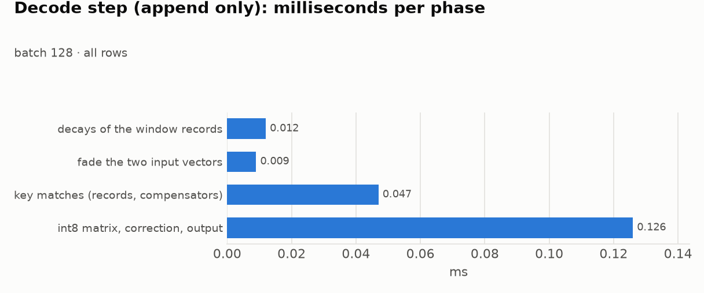
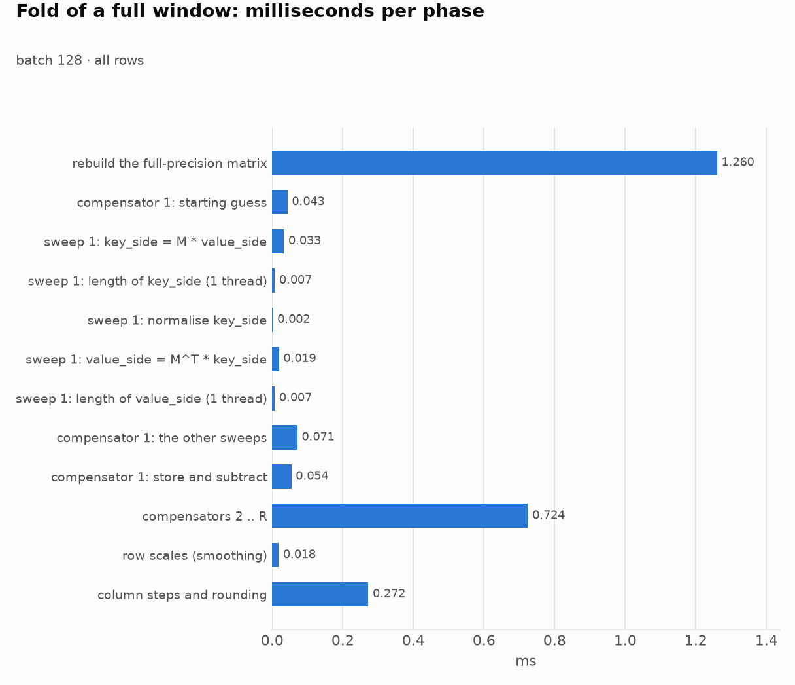
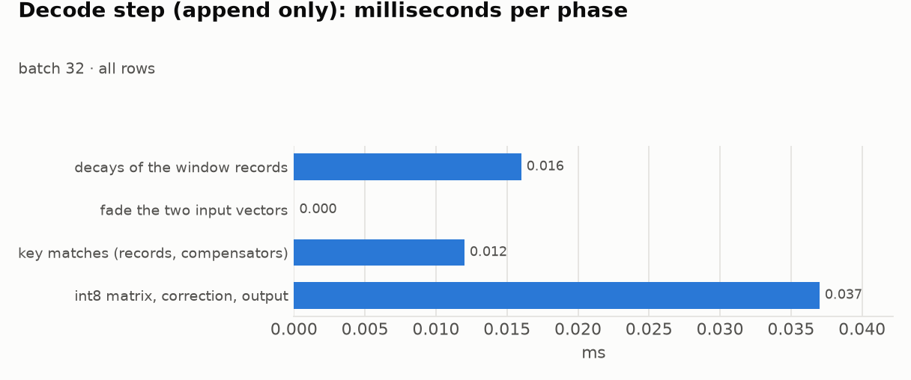
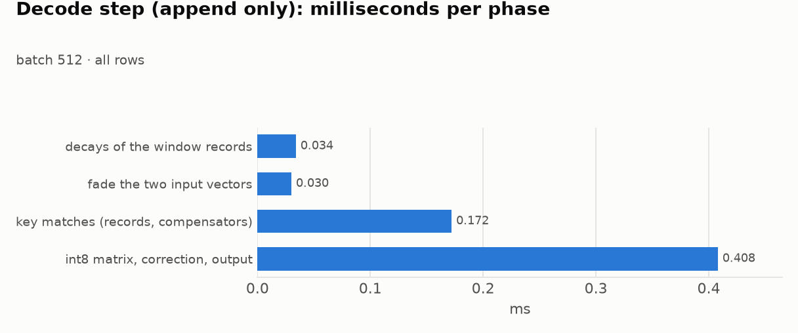
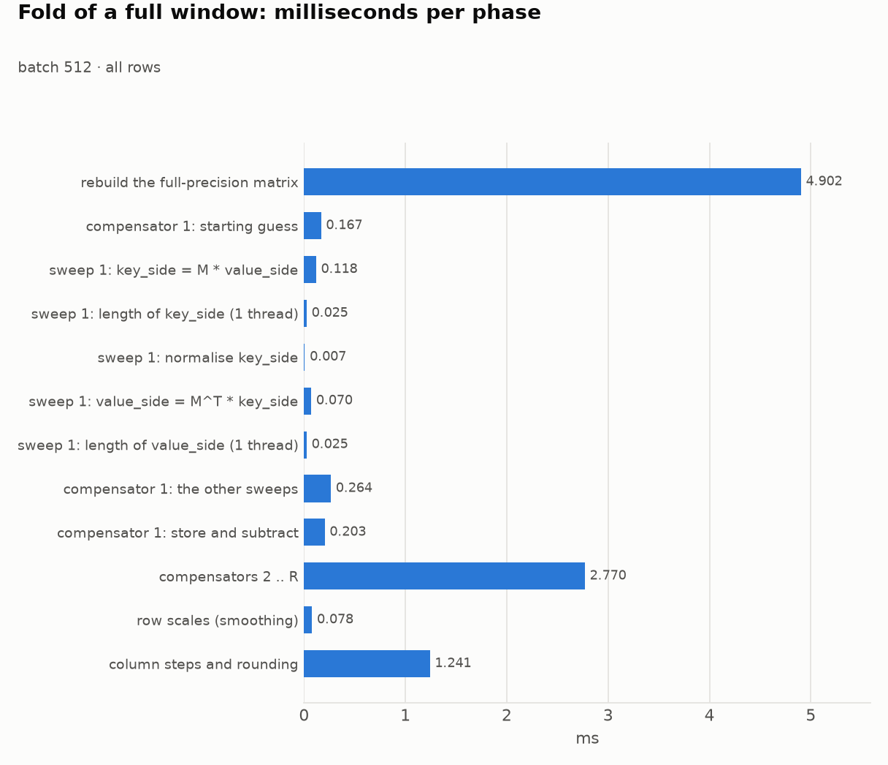

Where the kernel's time goes
The kernel is stopped at named points of its work; a phase's time is the difference between two stops. Medians of 30 calls, state restored before every call.
Batch 128, 2 sweeps suite

| Phase | ms | Share | Cumulative ms | 10% .. 90% of calls |
|---|---|---|---|---|
| decays of the window records | 0.012 | 6.2% | 0.012 | 0.012 .. 0.012 |
| fade the two input vectors | 0.009 | 4.7% | 0.021 | 0.020 .. 0.021 |
| key matches (records, compensators) | 0.047 | 24.4% | 0.067 | 0.067 .. 0.068 |
| int8 matrix, correction, output | 0.126 | 65.3% | 0.193 | 0.192 .. 0.195 |

| Phase | ms | Share | Cumulative ms | 10% .. 90% of calls |
|---|---|---|---|---|
| rebuild the full-precision matrix | 1.260 | 50.2% | 1.260 | 1.258 .. 1.262 |
| compensator 1: starting guess | 0.043 | 1.7% | 1.303 | 1.302 .. 1.306 |
| sweep 1: key_side = M * value_side | 0.033 | 1.3% | 1.336 | 1.334 .. 1.339 |
| sweep 1: length of key_side (1 thread) | 0.007 | 0.3% | 1.343 | 1.342 .. 1.346 |
| sweep 1: normalise key_side | 0.002 | 0.1% | 1.345 | 1.343 .. 1.347 |
| sweep 1: value_side = M^T * key_side | 0.019 | 0.8% | 1.364 | 1.363 .. 1.367 |
| sweep 1: length of value_side (1 thread) | 0.007 | 0.3% | 1.371 | 1.370 .. 1.374 |
| compensator 1: the other sweeps | 0.071 | 2.8% | 1.442 | 1.440 .. 1.444 |
| compensator 1: store and subtract | 0.054 | 2.2% | 1.496 | 1.495 .. 1.498 |
| compensators 2 .. R | 0.724 | 28.8% | 2.220 | 2.217 .. 2.223 |
| row scales (smoothing) | 0.018 | 0.7% | 2.238 | 2.236 .. 2.242 |
| column steps and rounding | 0.272 | 10.8% | 2.510 | 2.508 .. 2.515 |
Per decode step, averaged over a window: 0.408 ms.
Batch 32, 2 sweeps suite

| Phase | ms | Share | Cumulative ms | 10% .. 90% of calls |
|---|---|---|---|---|
| decays of the window records | 0.016 | 25.4% | 0.016 | 0.014 .. 0.031 |
| fade the two input vectors | -0.003 | -4.8% | 0.013 | 0.011 .. 0.015 |
| key matches (records, compensators) | 0.012 | 19.0% | 0.025 | 0.024 .. 0.034 |
| int8 matrix, correction, output | 0.037 | 58.7% | 0.063 | 0.061 .. 0.077 |
| Phase | ms | Share | Cumulative ms | 10% .. 90% of calls |
|---|---|---|---|---|
| rebuild the full-precision matrix | 0.328 | 51.2% | 0.328 | 0.324 .. 0.338 |
| compensator 1: starting guess | 0.010 | 1.6% | 0.338 | 0.335 .. 0.350 |
| sweep 1: key_side = M * value_side | 0.007 | 1.1% | 0.345 | 0.343 .. 0.348 |
| sweep 1: length of key_side (1 thread) | 0.003 | 0.5% | 0.348 | 0.345 .. 0.353 |
| sweep 1: normalise key_side | -0.000 | -0.0% | 0.348 | 0.345 .. 0.351 |
| sweep 1: value_side = M^T * key_side | 0.006 | 0.9% | 0.354 | 0.351 .. 0.357 |
| sweep 1: length of value_side (1 thread) | 0.001 | 0.2% | 0.355 | 0.351 .. 0.358 |
| compensator 1: the other sweeps | 0.017 | 2.7% | 0.372 | 0.370 .. 0.376 |
| compensator 1: store and subtract | 0.015 | 2.3% | 0.387 | 0.384 .. 0.396 |
| compensators 2 .. R | 0.182 | 28.4% | 0.569 | 0.567 .. 0.573 |
| row scales (smoothing) | 0.004 | 0.6% | 0.573 | 0.569 .. 0.584 |
| column steps and rounding | 0.068 | 10.6% | 0.641 | 0.638 .. 0.644 |
Per decode step, averaged over a window: 0.229 ms.
Batch 512, 2 sweeps suite

| Phase | ms | Share | Cumulative ms | 10% .. 90% of calls |
|---|---|---|---|---|
| decays of the window records | 0.034 | 5.3% | 0.034 | 0.034 .. 0.034 |
| fade the two input vectors | 0.030 | 4.7% | 0.064 | 0.064 .. 0.064 |
| key matches (records, compensators) | 0.172 | 26.7% | 0.236 | 0.236 .. 0.237 |
| int8 matrix, correction, output | 0.408 | 63.4% | 0.644 | 0.642 .. 0.645 |

| Phase | ms | Share | Cumulative ms | 10% .. 90% of calls |
|---|---|---|---|---|
| rebuild the full-precision matrix | 4.902 | 49.7% | 4.902 | 4.900 .. 4.905 |
| compensator 1: starting guess | 0.167 | 1.7% | 5.070 | 5.066 .. 5.073 |
| sweep 1: key_side = M * value_side | 0.118 | 1.2% | 5.188 | 5.185 .. 5.194 |
| sweep 1: length of key_side (1 thread) | 0.025 | 0.3% | 5.213 | 5.209 .. 5.216 |
| sweep 1: normalise key_side | 0.007 | 0.1% | 5.220 | 5.217 .. 5.223 |
| sweep 1: value_side = M^T * key_side | 0.070 | 0.7% | 5.290 | 5.285 .. 5.293 |
| sweep 1: length of value_side (1 thread) | 0.025 | 0.3% | 5.315 | 5.311 .. 5.317 |
| compensator 1: the other sweeps | 0.264 | 2.7% | 5.578 | 5.574 .. 5.585 |
| compensator 1: store and subtract | 0.203 | 2.1% | 5.781 | 5.776 .. 5.785 |
| compensators 2 .. R | 2.770 | 28.1% | 8.551 | 8.541 .. 8.560 |
| row scales (smoothing) | 0.078 | 0.8% | 8.628 | 8.620 .. 8.640 |
| column steps and rounding | 1.241 | 12.6% | 9.870 | 9.866 .. 9.875 |
Per decode step, averaged over a window: 1.297 ms.
Source: profile_*.txt. A difference smaller than the 10% .. 90% spread is not a finding.
Generated 2026-11-13 22:50 from results/run-quick-einstein-v7, results/fast_checks_v2, results/s20_ablations, results/gpu-suite, results/fast_checks by reports/generate_reports.py. All reports.